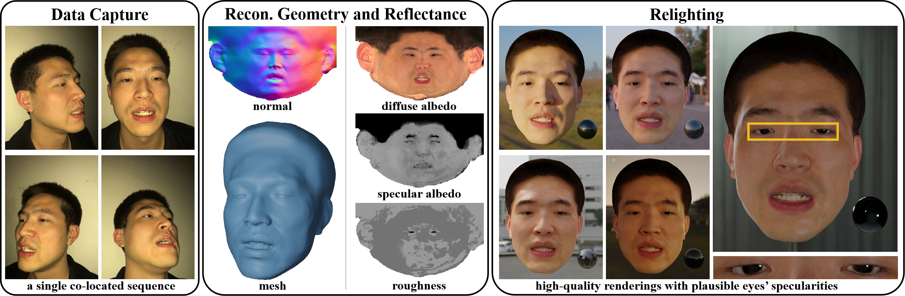

High-Quality Facial Geometry and Appearance Capture at Home
Preprint 23.12


Abstract
Facial geometry and appearance capture have demonstrated tremendous success in 3D scanning real humans in studios. Recent works propose to democratize this technique while keeping the results high quality. However, they are still inconvenient for daily usage. In addition, they focus on an easier problem of only capturing facial skin. This paper proposes a novel method for high-quality face capture, featuring an easy-to-use system and the capability to model the complete face with skin, mouth interior, hair, and eyes. We reconstruct facial geometry and appearance from a single co-located smartphone flashlight sequence captured in a dim room where the flashlight is the dominant light source (e.g. rooms with curtains or at night). To model the complete face, we propose a novel hybrid representation to effectively model both eyes and other facial regions, along with novel techniques to learn it from images. We apply a combined lighting model to compactly represent real illuminations and exploit a morphable face albedo model as a reflectance prior to disentangle diffuse and specular. Experiments show that our method can capture high-quality 3D relightable scans.
Overview

Overview of our CoRA (Co-located Relightable Avatar) method. We propose a novel method for high-quality face capture, featuring a low-cost and easy-to-use capture setup and the capability to model the complete face with skin, mouth interior, hair, and eyes. Our method takes a single co-located smartphone flashlight sequence captured in a dim room (e.g. rooms with curtains or at night) as input. It reconstructs relightable 3D face assets from the recorded data. These can be used by common graphics software like Blender to create photo-realistic renderings in new environments.
Video Results
Citation
@inproceedings{han2023cora,
author = {Han, Yuxuan and Lyu, Junfeng and Xu, Feng},
title = {High-Quality Facial Geometry and Appearance Capture at Home},
booktitle = {arXiv preprint arXiv:2312.03442},
year={2023}
}